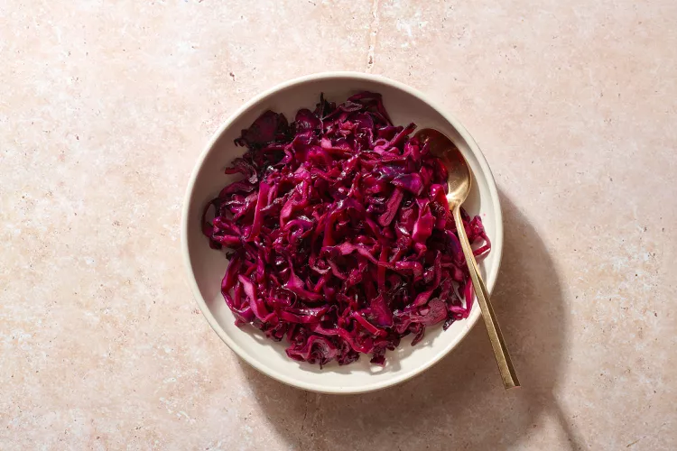

Home
Red Cabbage

Description
Love it or hate it, we're here to celebrate it! Red cabbage is rich with vitamin C and enhances the color pallete of many meals. You'll be full of nutrition in no time with this quick sautee!
Ingredients
- Red Cabbage
- Olive Oil and Butter
- Pepper
- Apple Cider Vinegar
Steps
- Heat a pan on low-medium heat.
- Add a tablespoon of butter and olive oil.
- Slice your head of red cabbage in half. Slice around the white core making thin strips.
- Add the red cabbage strips to the oil, pepper, stirring occasionally.
- After ~10 minutes, once the batch of cabbage has been heated through evenly add a tablespoon of apple cider vinegar.
- Stir evenly and remove from heat.